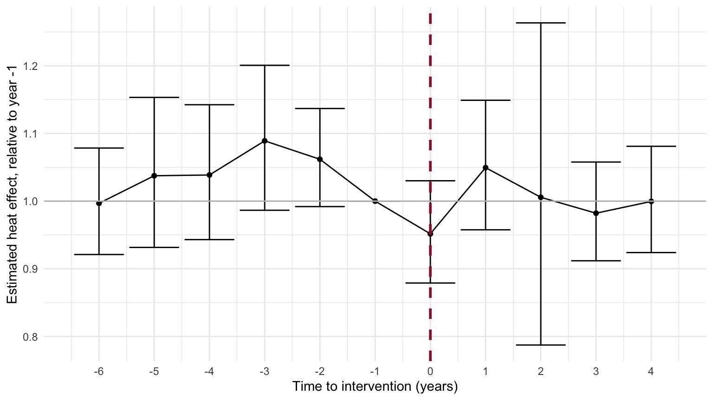

3 Method 2: Difference-in-Differences (12 min)
This section follows a three-step DiD pipeline: a descriptive “Table 1”
style pre/post comparison with a naive percentage-based DiD term, an
event-study plot with a proper event-time regression, and then the
formal Poisson regression, run through a reusable
model_generalized() function.
# a few extra day-level covariates the models below expect: day of week,
# week number, and a simple summer holiday flag
holiday_years <- 2010:2020
holidays <- c(
as.Date(timeDate::holiday(holiday_years, "USMemorialDay")),
as.Date(timeDate::holiday(holiday_years, "USIndependenceDay")),
as.Date(timeDate::holiday(holiday_years, "USLaborDay"))
)
daily_counts <- encounters %>%
count(date, name = "n_encounters_actual") %>%
right_join(daily_df, by = "date") %>%
mutate(
n_encounters_actual = ifelse(is.na(n_encounters_actual), 0, n_encounters_actual),
dow = wday(date),
week = week(date),
holid = as.integer(date %in% holidays)
)3.1 2.1 Descriptive Table 1, with a naive DiD term
Compute each group’s share of its own period’s total, take pre-to-post differences within the extreme and non-extreme groups separately, then difference those two differences, a quick sanity check to run before turning to any regression model.
pre_total <- sum(daily_counts$n_encounters_actual[daily_counts$post == 0])
post_total <- sum(daily_counts$n_encounters_actual[daily_counts$post == 1])
did_table1 <- daily_counts %>%
mutate(extreme_chr = ifelse(extreme == 1, ">= 90th pctile", "< 90th pctile"),
post_chr = ifelse(post == 1, "Post", "Pre")) %>%
group_by(extreme_chr, post_chr) %>%
summarise(visits = sum(n_encounters_actual), .groups = "drop") %>%
tidyr::unite("group", extreme_chr, post_chr, sep = " ") %>%
tidyr::pivot_wider(names_from = group, values_from = visits)
did_table1 <- did_table1 %>%
mutate(
`< 90th pctile Pre (%)` = round(100 * `< 90th pctile Pre` / pre_total, 1),
`< 90th pctile Post (%)` = round(100 * `< 90th pctile Post` / post_total, 1),
`>= 90th pctile Pre (%)` = round(100 * `>= 90th pctile Pre` / pre_total, 1),
`>= 90th pctile Post (%)` = round(100 * `>= 90th pctile Post` / post_total, 1),
`< 90th pctile Diff` = `< 90th pctile Post (%)` - `< 90th pctile Pre (%)`,
`>= 90th pctile Diff` = `>= 90th pctile Post (%)` - `>= 90th pctile Pre (%)`,
`DiD Term` = `< 90th pctile Diff` - `>= 90th pctile Diff`
)
print(did_table1, width = Inf)## # A tibble: 1 × 11
## `< 90th pctile Post` `< 90th pctile Pre` `>= 90th pctile Post` `>= 90th pctile Pre`
## <int> <int> <int> <int>
## 1 40988 43993 4860 7383
## `< 90th pctile Pre (%)` `< 90th pctile Post (%)` `>= 90th pctile Pre (%)` `>= 90th pctile Post (%)`
## <dbl> <dbl> <dbl> <dbl>
## 1 85.6 89.4 14.4 10.6
## `< 90th pctile Diff` `>= 90th pctile Diff` `DiD Term`
## <dbl> <dbl> <dbl>
## 1 3.80 -3.8 7.603.2 2.2 Event-study plot
A proper event-study design: a Poisson regression with the extreme-heat indicator interacted with a full set of year-relative-to-intervention dummies (event time), so each year gets its own estimated heat effect relative to the year immediately before the intervention (event time -1, the omitted reference category), rather than just comparing raw annual means.
event_study_plot <- function(dataframe, outcome_variable, threshold_temp,
intervention_year, start_year, end_year) {
data <- dataframe %>%
filter(year %in% start_year:end_year) %>%
mutate(event_time = year - intervention_year)
list_event_times <- as.character(seq(min(data$event_time), max(data$event_time)))
list_event_times <- c("-1", list_event_times[list_event_times != "-1"])
data <- data %>%
mutate(event_time_factor = factor(event_time, levels = list_event_times))
data$outcome_variable <- data[[outcome_variable]]
data$threshold_temp <- data[[threshold_temp]]
event_model <- glm(
outcome_variable ~ threshold_temp +
(threshold_temp:event_time_factor) +
event_time_factor +
holid + year + dow + month + week,
data = data,
family = poisson
)
coefficients <- coef(event_model)
interaction_coefficient <- coefficients[grep("threshold_temp:event_time_factor", names(coefficients))]
conf_intervals <- confint(event_model)
interaction_confint <- conf_intervals[grep("threshold_temp:event_time_factor", rownames(conf_intervals)), ]
plot_data <- data.frame(cbind(interaction_coefficient, interaction_confint)) %>%
tibble::rownames_to_column(var = "EventTime")
plot_data$EventTime <- as.numeric(sub("^threshold_temp:event_time_factor", "", plot_data$EventTime))
plot_data$interaction_coefficient <- exp(plot_data$interaction_coefficient)
plot_data$lowCI <- exp(plot_data$X2.5..)
plot_data$uppCI <- exp(plot_data$X97.5..)
new_row <- data.frame(EventTime = -1, interaction_coefficient = 1, lowCI = 1, uppCI = 1)
plot_data <- plot_data %>% dplyr::select(-c(X2.5.., X97.5..))
plot_data2 <- rbind(plot_data, new_row)
ggplot(plot_data2, aes(EventTime, interaction_coefficient)) +
geom_line() +
geom_point() +
geom_errorbar(aes(ymin = lowCI, ymax = uppCI)) +
geom_vline(xintercept = 0, color = "#A51C30", linetype = "dashed", linewidth = 1) +
geom_hline(yintercept = 1, color = "grey") +
xlab("Time to intervention (years)") +
ylab("Estimated heat effect, relative to year -1") +
theme_minimal() +
scale_x_continuous(
breaks = min(plot_data2$EventTime):max(plot_data2$EventTime),
labels = as.character(min(plot_data2$EventTime):max(plot_data2$EventTime))
)
}
event_study_plot(
dataframe = daily_counts, outcome_variable = "n_encounters_actual",
threshold_temp = "extreme", intervention_year = 2016,
start_year = 2010, end_year = 2020
)
Reading the plot. Each point is a year’s estimated multiplicative effect of an extreme heat day on encounter counts, relative to the year right before the intervention. If the intervention worked, you’d expect the post-intervention points (event time >= 0) to sit visibly lower than the pre-intervention points. Flat, overlapping confidence intervals across the dashed line, on the other hand, look a lot like the pattern Hess et al. found when they tested whether Ahmedabad’s effect held up without the anomalous 2010 heat wave in the baseline.
3.3 2.3 Poisson regression via model_generalized()
A reusable function for the main DiD estimate: a Poisson regression of the outcome on exposure, intervention period, their interaction, and day of week, week, month, year, and a holiday flag, returning the interaction term as an incidence rate ratio with its 95% profile-likelihood confidence interval.
model_generalized <- function(dataframe, outcome_count, exposure, intervention, weights = NULL) {
if (is.null(weights)) {
model <- glm(
outcome_count ~ exposure + intervention + (exposure:intervention) +
year + holid + month + week + dow,
data = dataframe, family = poisson
)
} else {
model <- glm(
outcome_count ~ exposure + intervention + (exposure:intervention) +
year + holid + month + week + dow,
data = dataframe, family = quasipoisson, weights = weights
)
}
coefficients <- coef(model)
interaction_coefficient <- exp(coefficients[grep("exposure:intervention", names(coefficients))])
conf_intervals <- exp(confint(model))
interaction_confint <- conf_intervals[grep("exposure:intervention", rownames(conf_intervals)), ]
paste0(round(interaction_coefficient, 2), " (",
round(interaction_confint[1], 2), ", ",
round(interaction_confint[2], 2), ")")
}Overall model:
did_overall_irr <- model_generalized(
dataframe = daily_counts,
outcome_count = daily_counts$n_encounters_actual,
exposure = daily_counts$extreme,
intervention = daily_counts$post
)
did_overall_irr## [1] "0.96 (0.92, 1)"Stratified calls, applied to a couple of subgroups the way an actual stratified analysis would: insurance type and chronic mental illness status, since those are the two characteristics with drifting composition built into the simulation.
daily_by_group <- function(filter_expr) {
encounters %>%
filter({{ filter_expr }}) %>%
count(date, name = "n_encounters_actual") %>%
right_join(daily_df, by = "date") %>%
mutate(
n_encounters_actual = ifelse(is.na(n_encounters_actual), 0, n_encounters_actual),
dow = wday(date),
week = week(date),
holid = as.integer(date %in% holidays)
)
}
medicaid_uninsured <- daily_by_group(insurance %in% c("Medicaid", "Uninsured"))
commercial_medicare <- daily_by_group(insurance %in% c("Commercial", "Medicare"))
chronic_mi_group <- daily_by_group(chronic_mi == 1)
data.frame(
subgroup = c("Medicaid/Uninsured", "Commercial/Medicare", "Chronic mental illness"),
IRR = c(
model_generalized(medicaid_uninsured, medicaid_uninsured$n_encounters_actual,
medicaid_uninsured$extreme, medicaid_uninsured$post),
model_generalized(commercial_medicare, commercial_medicare$n_encounters_actual,
commercial_medicare$extreme, commercial_medicare$post),
model_generalized(chronic_mi_group, chronic_mi_group$n_encounters_actual,
chronic_mi_group$extreme, chronic_mi_group$post)
)
)## subgroup IRR
## 1 Medicaid/Uninsured 0.97 (0.93, 1.01)
## 2 Commercial/Medicare 0.91 (0.83, 0.99)
## 3 Chronic mental illness 0.99 (0.92, 1.06)Reading the output. The interaction-term IRR is the DiD estimate: a value below 1 means the extra risk on an extreme heat day was smaller after the intervention than before it, controlling for day of week, week, month, year, and holidays. Because we built a true attenuation of about 36% into the simulation, a well-specified DiD model should land somewhere in that neighborhood for the overall estimate.